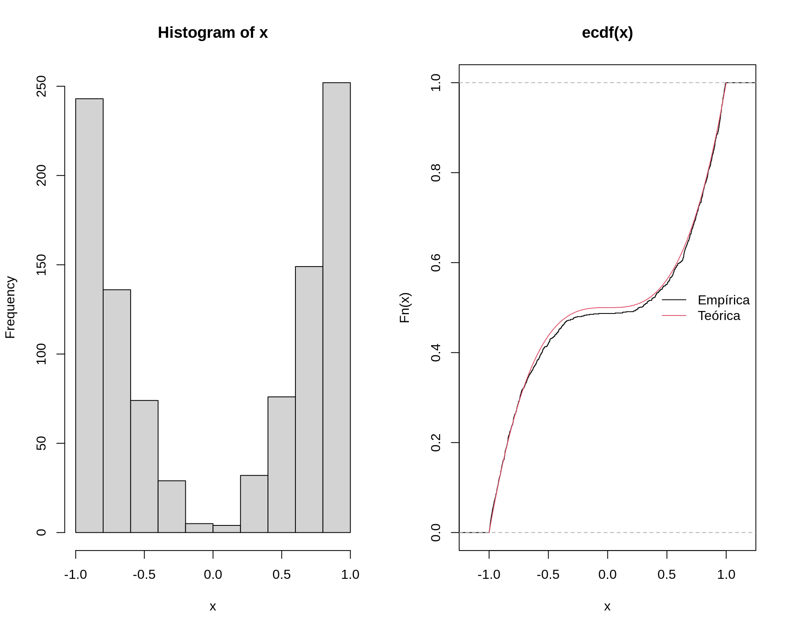
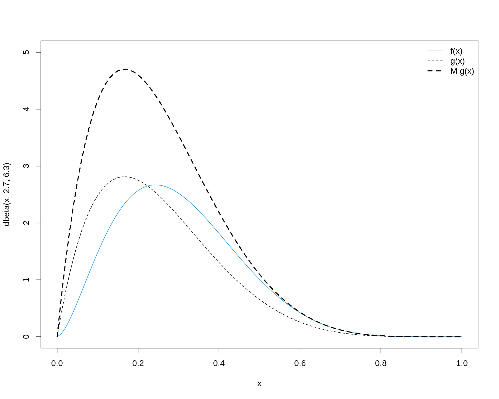

Geração de números não uniformes
Método de aceitação e rejeição
Walmes M. Zeviani e Fernando P. Mayer
1 Introdução
Quando se deseja gerar números aleatórios de distribuições de probabilidade, nem sempre é possível aplicar o método da transformação integral da probabilidade. Alguns situação são:
- Casos em que não se tem expressão para a função de densidade acumulada, \(F\), como é o caso da distribuição gaussiana e gama.
- Casos em que mesmo que se conheça \(F(x)\) não possível chegar à uma expressão para a função \(F^{-1}\).
2 Método de aceitação e rejeição
Se a função densidade de probabilidade for conhecida, \(f\), então é possível gerar números aleatórios dessa variável aleatória caracterizada por \(f\) pelo método da aceitação e rejeição. É necessário satisfazer dois requisitos:
- Ter um bom gerador de números uniformes.
- Ter um bom gerador de números de uma variável aleatória representada por uma distribuição \(D\), escolhida de tal maneira que existe uma constante \(M\) tal que a densidade de \(g\) que caracteriza a distribuição \(D\) satisfaz \[ f(x) \leq M g(x) \] para todo \(x\) do domínio de \(f\). A função \(g\) que “encapsula” a função \(f\) é chamada de distribuição proposta (proposal).
O seguinte algoritmo permite gerar números aleatórios de uma distribuição de probabilidade caracterizada pela função densidade \(f\):
- Gerar \(y\) como sendo uma ocorrência da variável aleatória representada por \(D\).
- Gerar \(u\) como sendo uma ocorrência de uma uniforme padrão.
- Se \[ u \leq \frac{f(y)}{M g(y)} \] considerar que \(x = y\) é um valor da distribuição de probabilidade alvo cuja densidade é \(f\), caso contrário, descartar \(y\).
- Repetir até atingir o número de valores desejado \(n\).
Para determinar o valor de \(M\), basta seguir a seguinte relação
\[ M \geq \max_x \frac{f(x)}{g(x)} \]
Alguns pontos que devem ser levados em consideração:
- O limite \(f(x) \leq M g(x)\) não precisa ser tão pequeno. O algoritmo permanece válido (mas possivelmente menos eficiente) quando \(M\) for um valor maior
- A probabilidade de aceitação é \(1/M\). Portanto \(M\) deve ser o menor possível para maior eficiência computacional.
2.1 Exemplo 1
Seja \(X\) uma VA com \(f(x) = 1.5 x^2, -1 < x < 1\). Simular valores desta.
## Gráfico da f.d.p da v.a. X, f(x).
curve(1.5 * (x ^ 2), -1, 1)## Tem integral 1?
integrate(function(x) 1.5 * (x^2), lower = -1, upper = 1)# 1 with absolute error < 1.1e-14Vamos considerar como \(g\) (a distribuição proposta) a densidade de uma uniforme entre -1 e 1. Então se a base é 2, o altura deve ser 0.5 para ter produto 1, assim \(g(y) = 0.5, -1 < y < 1\). Qual deve ser um valor de \(M\) para garantir que \(f(x) \leq M g(x)\) para todo \(x\) dentro do intervalo \([-1, 1]\)? Pela definição acima, temos que: \[ M \geq \max_x \frac{f(x)}{g(x)} = \frac{1.5}{0.5} = 3 \] Portanto, fazemos \(M = 3\), pois esse é o valor mínimo necessário para satisfazer \(f(x) \leq M g(x)\) (e queremos o valor de \(M\) menor possível para mais eficiência computacional).
No gráfico abaixo, vemos a função \(f(x)\), a proposta \(g(x)\), e a que iremos de fato utilizar no algoritmo, a \(M g(x)\)
curve(1.5 * (x^2), -1, 1, col = 4)
curve(0.5 + 0 * x, add = TRUE, lty = 2)
curve(3 * 0.5 + 0 * x, add = TRUE, lty = 2, lwd = 2)
legend("bottomright", legend = c("f(x)", "g(x)", "M g(x)"),
lty = c(1, 2, 2), col = c(4, 1, 1), lwd = c(1, 1, 2), bty = "n")Agora podemos prosseguir com o algoritmo:
## Criando os elementos necessários.
f <- function(x) 1.5 * x^2
g <- function(x) 0.5 + 0 * x
M <- 3
x <- NULL
## 1. Gerar y cuja densidade é g()
set.seed(1)
(y <- runif(n = 1, -1, 1))# [1] -0.4689827## 2. Gerar u de uma uniforme padrão.
(u <- runif(n = 1))# [1] 0.3721239## 3. Calcula a razão entre as densidades
(r <- f(y)/(M * g(y)))# [1] 0.2199447## 4. Compara e decide
if (u < r) {
x <- y
print("u < r então valor aceito.")
} else {
print("u >= r então valor descartado.")
}# [1] "u >= r então valor descartado."Verifica os pontos no gráfico:
curve(1.5 * (x^2), -1, 1, col = 4)
curve(3 * 0.5 + 0 * x, add = TRUE, lty = 2, lwd = 2)
legend("bottomright", legend = c("f(x)", "g(x)", "M g(x)"),
lty = c(1, 2, 2), col = c(4, 1, 1), lwd = c(1, 1, 2), bty = "n")
points(y, f(y), pch = 19, col = 4)
text(y, f(y), "f(y)", pos = 4, col = 4)
points(y, M * g(y), pch = 19, col = 1)
text(y, M * g(y), "M g(y)", pos = 1, col = 1)
points(y, u * M * g(y), pch = 19, col = 2)
text(y, u * M * g(y), "u", pos = 4, col = 2)
Note que o valor sorteado de \(y\) (da proposta \(\text{U}[-1,1]\)) foi -0.469. Os pontos azul e preto são as densidades da \(f\) e da \(g\) avaliadas nesse ponto. Como o valor sorteado \(u\) (da \(\text{U}[0,1]\)) foi \(0.372 > 0.22 = f(y)/Mg(y)\), então o valor de \(y\) é rejeitado. Isso fica claro pelo gráfico, pois esse ponto está em uma área acima da densidade de \(f\), portanto não deve fazer parte de uma amostra dessa distribuição.
Veja também que o valor de \(u\) é comparável com a razão \(f(y)/Mg(y)\), pois esta razão sempre será algum valor entre 0 e 1. Portanto o valor de \(u\) é sempre relativo à essa razão (i.e., não está na mesma escala das densidades de \(f\) e \(g\)).
Para uma ilustração animada veja este exemplo da geração de números de uma distribuição normal, a partir de uma Cauchy (distribuição proposta). Para os detalhes da implementação veja este link.
Agora, podemos definir um algoritmo que repete esse processo para um número fixo de amostras da distribuição proposta.
## Simula de uma única vez, com um valor fixo de simulações
Nsim <- 2500
set.seed(1)
## Amostra da proposta
y <- runif(Nsim, -1, 1)
## Amostra da U(0,1)
u <- runif(Nsim)
## Calcula a razão
r <- f(y)/(M * g(y))
## x será um vetor com os valores de y onde u < r
x <- y[u < r]
## Valores de u aceitos (apenas para o grafico)
ua <- u[u < r]
## Valores de u rejeitados (apenas para o grafico)
ur <- u[u >= r]Graficamente, temos a seguinte situação. Os pontos verde são aqueles aceitados na simulação, e portanto, farão parte da amostra aleatória da distribuição \(f\) que queremos. Os pontos em vermelho são todos aqueles que foram rejeitados e foram descartados.
curve(1.5 * (x^2), -1, 1, col = 4)
curve(3 * 0.5 + 0 * x, add = TRUE, lty = 2, lwd = 2)
points(x, ua * M * g(x), col = 3)
points(y[u >= r], ur * M * g(y[u >= r]), col = 2)Lembre-se que a taxa teórica de aceitação é \(1/M\), portanto, podemos conferir isso com essa amostra específica.
## Quantos foram aceitados
length(x)/length(y)# [1] 0.3456## Taxa (teorica) de aceitacao é
1/M# [1] 0.3333333## Quantos foram rejeitados
length(ur)/length(u)# [1] 0.6544No algoritmo acima, fixamos o número de amostras de \(g\) (2500), e com isso, obtivemos uma amostra de apenas 864 valores de \(f\) (porque a taxa de aceitação foi de 35%). No entanto, na maioria das vezes, o que queremos é gerar um número fixo \(N\) de valores da distribuição de interesse \(f\). Como não temos como prever antecipadamente a taxa de aceitação para cada simulação, então precisamos de uma estrutura de repetição como o while(), que executará o algoritmo o número de vezes necessário para gerar uma amostra com exatamente \(N\) valores.
## Simula 1000 valores de f
N <- 1000L
x <- numeric(0)
while(length(x) < N) {
y <- runif(1, -1, 1)
u <- runif(1)
r <- f(y)/(M * g(y))
if(u < r) {
## Não é a forma mais eficiente!
x <- c(x, y)
}
}
length(x)# [1] 1000Podemos então verificar se a simulação gerou de fato valores de \(f\) através de um histograma e da comparação das distribuições acumuladas da amostra (empírica) e teórica (definido a expressão analítica para a acumulada \(F_X(x)\)).
par(mfrow = c(1, 2))
hist(x)
Fx <- function(x) 0.5 * (x^3 + 1)
plot(ecdf(x))
curve(Fx, add = TRUE, from = -1, to = 1, col = 2)
legend("right", legend = c("Empírica", "Teórica"),
lty = 1, col = 1:2, bty = "n")
par(mfrow = c(1, 1))
2.2 Exemplo 2
Considere que deseja-se gerar valores de uma distribuição \(\text{Beta}(\alpha = 2.7, \beta = 6.3)\) (e também suponha que não dispomos de um gerador como o que já existe no R pela função rbeta()).
curve(dbeta(x, 2.7, 6.3), from = 0, to = 1)
A distribuição proposta mais natural seria uma Uniforme entre 0 e 1, que possui densidade 1 (para todo \(x\)).
curve(dbeta(x, 2.7, 6.3), from = 0, to = 1, col = 4)
curve(1 + 0 * x, from = 0, to = 1, add = TRUE, lty = 2)
legend("topright", legend = c("f(x)", "g(x)"),
lty = c(1, 2), col = c(4, 1), bty = "n")
Como podemos achar o valor de \(M\) que satisfaça \(f(x) \leq M g(x)\)? Já vimos que esse valor pode ser determinado por \[ M \geq \max_x \frac{f(x)}{g(x)} \] O valor máximo da densidade de \(g(x)\) é fácil de ser encontrado, pois nesse caso é 1 para todo \(x\). Como fazer então para determinar o valor máximo da \(\text{Beta}(2.7, 6.3)\)? Temos duas opções:
- Usar a expressão da moda da distribuição (se existir)
- Achar esse valor máximo por otimização numérica
No caso da distribuição Beta, existe uma expressão fechada para de determinar a moda, que é \(\frac{\alpha-1}{\alpha+\beta-2}\). Portanto seria fácil nesse caso determinar o valor máximo da densidade por meio de
## Define parâmetros
alfa <- 2.7; beta <- 6.3
## A moda é
(moda <- (alfa - 1)/(alfa + beta - 2))# [1] 0.2428571## A densidade nesse ponto é então
dbeta(moda, alfa, beta)# [1] 2.669744No entanto, em diversas situações, não temos uma expressão fechada para a moda ou ela não pode ser determinada analiticamente. Por isso, nesses casos, podemos encontrar o valor máximo da função através de otimização numérica dessa função. Esse método serve para qualquer distribuição (na verdade qualquer função) onde deseja-se obter o ponto de máxima.
No R, podemos passar a função que desejamos maximizar para a função optimize(). Aqui usaremos a função dbeta() que já implementa a expressão de densidade da Beta, mas poderíamos também escrever essa função manualmente e usá-la na otimização.
(max.beta <- optimize(f = function(x) {dbeta(x, alfa, beta)},
interval = c(0, 1), maximum = TRUE))# $maximum
# [1] 0.2428608
#
# $objective
# [1] 2.669744Note que a função retorna dois valores: o ponto onde foi encontrada a densidade máxima (igual a moda), e o valor da densidade nesse ponto. Veja que os resultados são virtualmente os mesmos dos anteriores obtidos de forma analítica. Por ser uma forma mais geral, prosseguiremos com o valor de densidade máximo obtido dessa forma. Agora podemos então determinar o valor de \(M\), como sendo
(M <- max.beta$objective/1)# [1] 2.669744Assim, ficamos com a distribuição proposta \(Mg(x)\) como pode ser visto abaixo.
curve(dbeta(x, alfa, beta), from = 0, to = 1, col = 4)
curve(1 + 0 * x, from = 0, to = 1, add = TRUE, lty = 2)
curve(M * 1 + 0 * x, add = TRUE, lty = 2, lwd = 2)
legend("right", legend = c("f(x)", "g(x)", "M g(x)"),
lty = c(1, 2, 2), col = c(4, 1, 1), lwd = c(1, 1, 2), bty = "n")
Seguindo com o algoritmo de aceitação e rejeição, a ideia é a mesma do exemplo anterior, mudando as funções apropriadamente.
## Define funções
f <- function(x) dbeta(x, alfa, beta)
g <- function(x) 1 + 0 * x
## Simula com número fixo
Nsim <- 2500
## Amostra da proposta U(0,1)
y <- runif(Nsim)
## Amostra u também de U(0,1)
u <- runif(Nsim)
## Calcula a razão
r <- f(y)/(M * g(y))
## x serão os valores de y onde u < r
x <- y[u < r]
## Aceitados
ua <- u[u < r]
## Rejeitados
ur <- u[u >= r]Assim como no exemplo anterior, podemos visualizar os pontos amostrados que foram aceitados e aqueles rejeitados.
curve(dbeta(x, alfa, beta), from = 0, to = 1, col = 4)
curve(M * 1 + 0 * x, from = 0, to = 1, add = TRUE, lty = 2, lwd = 2)
points(x, ua * M * g(x), col = 3)
points(y[u >= r], ur * M * g(y[u >= r]), col = 2)
Lembre-se que a taxa de aceitação teórica é \(1/M\), e neste exemplo temos
## Quantos foram aceitados
length(x)/length(y)# [1] 0.3768## Taxa (teorica) de aceitacao é
1/M# [1] 0.3745677Note pelo gráfico acima que a maior parte dos pontos amostrados não são aceitos (veja também a baixa taxa de aceitação). Isso mostra que estamos desperdiçando a maior parte do tempo computacional amostrando pontos que não serão aceitos.
Devemos então pensar em uma outra distribuição proposta, com a intenção de melhorar (aumentar) a taxa de aceitação. Naturalmente, uma distribuição proposta com um formato mais próximo daquele que queremos amostrar seria possivelmente mais eficiente.
Considere então como uma nova distribuição proposta uma \(\text{Beta}(2, 6)\) (ainda queremos amostrar de uma \(\text{Beta}(2.7, 6.3)\)).
curve(dbeta(x, 2.7, 6.3), from = 0, to = 1, col = 4, ylim = c(0, 3))
curve(dbeta(x, 2, 6), from = 0, to = 1, add = TRUE, lty = 2)
legend("topright", legend = c("f(x)", "g(x)"),
lty = c(1, 2), col = c(4, 1), bty = "n")Com o formato mais próximo da proposta, certamente a taxa de aceitação será maior. Precisamos novamente encontrar o valor \(M\) que satisfaça \(f(x) \leq M g(x)\). Já vimos que podemos usar a moda, mas vamos usar o método geral de encontrar a densidade máxima das duas distribuições por otimização numérica. Aqui também temos duas opções:
- Encontrar o máximo de cada função separadamente e fazer a razão entre eles
- Encontrar diretamente o máxima da razão entre as duas distribuições
A segunda abordagem é mais direta e levará ao mesmo resultado da primeira, mas só precisaremos fazer uma otimização. Portanto prosseguimos com
(M <- optimize(f = function(x) {dbeta(x, 2.7, 6.3)/dbeta(x, 2, 6)},
interval = c(0, 1), maximum = TRUE)$objective)# [1] 1.671808Note que esse já é o valor de \(M\), e ficamos com a seguinte situação
curve(dbeta(x, 2.7, 6.3), from = 0, to = 1, col = 4, ylim = c(0, 5))
curve(dbeta(x, 2, 6), from = 0, to = 1, add = TRUE, lty = 2)
curve(M * dbeta(x, 2, 6), add = TRUE, lty = 2, lwd = 2)
legend("topright", legend = c("f(x)", "g(x)", "M g(x)"),
lty = c(1, 2, 2), col = c(4, 1, 1), lwd = c(1, 1, 2), bty = "n")
Agora fazemos o mesmo processo para um número fixo de simulações
## Define funções
f <- function(x) dbeta(x, 2.7, 6.3)
g <- function(x) dbeta(x, 2, 6)
## Simula
Nsim <- 2500
## Amostra da proposta
y <- rbeta(Nsim, 2, 6)
## Amostra da U(0,1)
u <- runif(Nsim)
r <- f(y)/(M * g(y))
x <- y[u < r]
ua <- u[u < r]
ur <- u[u >= r]O resultado dos pontos aceitados agora pode ser visto abaixo.
curve(dbeta(x, 2.7, 6.3), from = 0, to = 1, col = 4, ylim = c(0, 5))
curve(M * dbeta(x, 2, 6), from = 0, to = 1, add = TRUE, lty = 2, lwd = 2)
points(x, ua * M * g(x), col = 3)
points(y[u >= r], ur * M * g(y[u >= r]), col = 2)
Veja que muitos mais pontos agora são aceitos. De fato, a taxa de aceitação usando essa nova distribuição proposta é bem maior quando comparada à taxa anterior com a uniforme como proposta.
## Quantos foram aceitados
length(x)/length(y)# [1] 0.5988## Taxa (teorica) de aceitacao é
1/M# [1] 0.5981549Novamente, podemos verificar a distribuição da amostra gerada através de um histograma, e (preferencialmente), através das distribuições acumuladas empírica e teórica.
par(mfrow = c(1, 2))
hist(x, freq = FALSE); lines(density(x), col = 2)
plot(ecdf(x))
curve(pbeta(x, 2.7, 6.3), add = TRUE, from = 0, to = 1, col = 2)
legend("right", legend = c("Empírica", "Teórica"),
lty = 1, col = 1:2, bty = "n")
par(mfrow = c(1, 1))
3 Exercícios
- A partir do algoritmo que simula 1000 valores da distribuição do exemplo 1, proponha um código mais eficiente (i.e. que não cresça o vetor
xcomo feito lá). - Para a distribuição Beta do exemplo 2, escreva um algoritmo geral que gere um número fixo \(N\) de valores.

Este conteúdo está disponível por meio da Licença Creative Commons 4.0